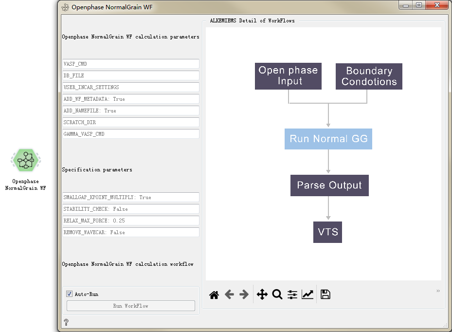

OpenPhase控件¶
Openphase Input控件¶
用于输入计算OpenPhase的配置参数。
Input |
Output |
|
|---|---|---|
EV | Diffuse |
Input |
Inputs |
参数配置:
nSteps 运算步数，整数
FTime 记录步长，整数
STime 显示步长，整数
LUnits 长度单位，m、cm、mm
TUnits 时间单位，s、m、h
MUnits 质量单位，kg、g
EUnits 能量单位，J、kJ
Nx x方向数量，整数
Ny y方向数量，整数
Nz z方向数量，整数
Nphses 相数目，整数
Ncomps 化合物数目，整数
Nsubs 取代数目，整数
dt 时间步长，浮点
IWidth 初始宽度，浮点
IEnergy 初始能量
IMobty 初始迁移率
Rho
dx 间距
nOMP
Restrt 重新开始选项
tStart
tRdtst
PhiIdx
Radius
Remesh
Boundary conditions 边界条件设定
Thermodynamic parameters 热力学参数

Get VTK 控件
用于获取VTK数据。
Input |
Output |
|---|---|
Database |
DataOP：data for Draw pictures |
参数配置:
option 选择vtk类型和动态类型
jobs_id 任务id
Get Data 从数据库获取数据并向下传递
{kind=link}
Get Oc Data 控件¶
用于获取OpenCalPhd数据。
Input |
Output |
|---|---|
Database |
Data_opencalPhd |
参数配置:
Param 选择数据类型
jobs_id 任务id
Get Data 从数据库获取数据并向下传递
{kind=link}
{kind=link}
Openphase Plot 控件¶
用于绘制Openphase图像。
Input |
Output |
|---|---|
Data_op |
None |
参数配置:
Openphase Plot 用于绘制Openphase动态图片

Animation Gif控件¶
用于Animation Gif。
Input |
Output |
|---|---|
DB_FILE |
None |
参数配置:
Gif Speed 调整Gif的播放速度
Restart 重新开始播放
{kind=link}
{kind=link}
NormalGG Gif控件¶
用于NormalGG Gif。
Input |
Output |
|---|---|
DB_FILE |
None |
参数配置:
Gif Speed 调整Gif的播放速度
Restart 重新开始播放
{kind=link}
Single GrainBoundary Gif控件¶
用于Single GrainBoundary Gif。
Input |
Output |
|---|---|
DB_FILE |
None |
参数配置:
Gif Speed 调整Gif的播放速度
Restart 重新开始播放

Openphase NormalGrain WF控件¶
用于Openphase NormalGrain工作流计算。
Input |
Output |
||
|---|---|---|---|
Input |
Data |
Workflow |
Workflows |
无参数
{kind=link}
Openphase SingleGrain WF控件¶
用于Openphase SingleGrain工作流计算。
Input |
Output |
||
|---|---|---|---|
Input |
Data |
Workflow |
Workflows |
无参数

{kind=link}